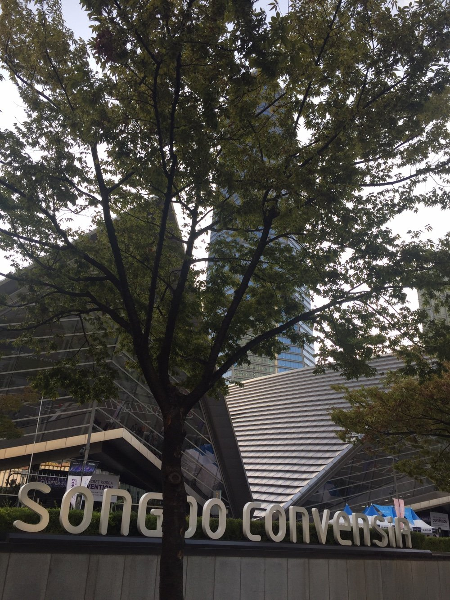

인천시, 국제기후금융·산업 콘퍼런스 열고 「영흥 AI에너지 파크」 발표
송도서 13회째…기후테크·녹색산업 투자 다섯 세션
영흥 미래에너지 파크, 이름 바꿔 1년여 만에 다시 무대에
「인천형 기후대응 기금」 설치도 발표…규모는 안 밝혀
AI경제저널=김갑봉 기자 | 인천시(시장 박찬대)는 3일 송도컨벤시아에서 「제13회 국제기후금융·산업 콘퍼런스」를 열었다고 밝혔다. 주제는 「기후테크로 여는 녹색산업의 미래」다.
이남주 시 기후에너지국장은 이날 2045년 탄소중립을 위한 청정에너지 전환 전략으로 「영흥 인공지능(AI) 에너지 파크 조성」을 발표했다. 기후재원 마련 방안으로는 「인천형 기후대응 기금」 설치를 내놓았다.
녹색기후기금 최고운영책임자 환영사
개회식에서는 박찬대 시장이 개회사를, 한나 미드리로버츠 녹색기후기금(GCF) 최고운영책임자가 환영사를 했다.

박 시장은 "인천시는 앞으로도 기후테크 육성과 글로벌 기후재원 연계를 통해 지속 가능한 미래를 선도하는 기후위기 대응 대표 도시로 나아가겠다"고 말했다.
라운드테이블은 박찬진 인천시 탄소중립녹색성장위원회 위원장이 좌장을 맡았다. 정선화 기후에너지환경부 녹색전환정책관과 이남주 국장, 오윤 녹색기후기금 선임고문, 윤영기 글로벌 기후테크 촉진기금 부문장이 패널로 나섰다. 강동구 인천대 산학협력단장, 조영준 대한상공회의소 지속가능발전경영원장도 참여했다.
전문 세션은 다섯 개로 나눠 열렸다. 기후테크와 녹색산업 투자, 지방정부의 기후재원과 기후테크 유치, 친환경 소재와 자원순환, 그린공급망과 인공지능 같은 기후테크의 산업화를 다뤘다.
영흥 미래에너지 파크의 새 이름
영흥 에너지 파크 구상은 처음이 아니다. 인천시는 지난해 9월 18일 「영흥 미래에너지 파크」 조성을 본격 추진한다고 발표했다. 영흥화력의 무탄소 발전 전환과 청정수소 생산시설, 데이터센터·연료전지·연구개발센터·해상풍력 배후단지로 구성한 첨단산업단지가 뼈대였다.
시는 지난해 7월 21일 옹진군과 공공기관, 에너지 기업 등 모두 11개 기관과 사전조사 공동 추진 업무협약을 맺었다고 밝혔다. 공공기관은 한국남동발전과 한국석유공사, 인천도시공사, 인천연구원, 인천테크노파크다. 민간에서는 삼성물산과 HDC현대산업개발, GS에너지, 어프로티움이 참여했다.
시는 당시 그해 10월 사전타당성 조사 용역을 발주할 계획이라고 밝혔다. 영흥화력과 영흥면 일원의 경제성 분석 결과에 따라 사업 추진 여부를 확정한다는 방침이었다. 당시 발표를 맡은 이도 이남주 국장(당시 미래산업국장)이다.
이번에는 이름에 「인공지능」이 들어갔다. 시는 이날 보도자료에서 사전타당성 조사 결과와 사업비, 추진 일정은 밝히지 않았다. 인천형 기후대응 기금도 규모와 재원, 설치 시기가 보도자료에 담기지 않았다.
발전 부문이 탄소중립의 열쇠
시는 올해 3월 26일 영흥발전본부를 찾아 발전 부문 에너지 전환을 점검했다. 시는 당시 인천의 온실가스 배출에서 발전 부문이 큰 비중을 차지한다며 영흥발전본부를 무탄소 전원 공급의 핵심 거점으로 바꾸는 방안을 논의했다고 밝혔다.
같은 자리에서 홍일표 인천시 기후환경대사는 "탈탄소 전환 과정에서 기존 근로자들이 하루아침에 일자리를 잃는 일이 없도록, 정의로운 전환이 이루어질 수 있는 정책적 배려가 반드시 필요하다"고 말했다.
시는 정부 목표보다 5년 앞선 2045년 탄소중립을 내걸고 있다. 시는 앞으로 글로벌 기후재원과 산학연 협력망을 다져 기후테크 중심의 녹색산업 육성과 탄소중립 정책을 추진할 계획이라고 밝혔다.
참고문헌
- "인천시,'기후테크'로 녹색산업의 미래를 열다", 인천시, 2026.11.3., https://www.incheon.go.kr/IC010205/view?repSeq=DOM_0000000015879566
- "인천시, 영흥발전본부서 '2045 탄소중립' 실행력 점검", 인천시, 2026.3.27., https://www.incheon.go.kr/IC010205/view?repSeq=DOM_0000000014416057
- "인천시, 영흥 미래에너지 파크 조성 본격 추진", 인천시, 2025.9.18., https://www.incheon.go.kr/IC010205/view?repSeq=DOM_0000000013143575
[사진 출처]
- [사진1] Dongil0324, "Songdo convensia.jpg", 위키미디어 공용, CC0, 2019.9.11., https://commons.wikimedia.org/wiki/File:Songdo_convensia.jpg